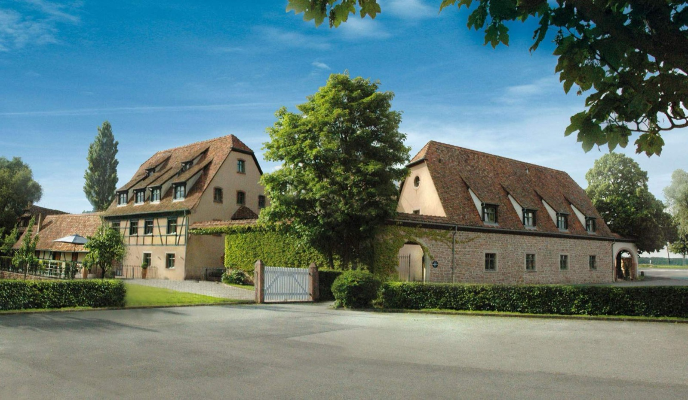
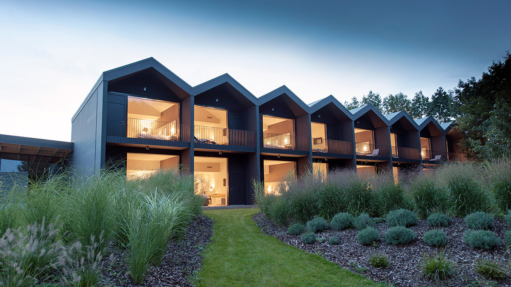
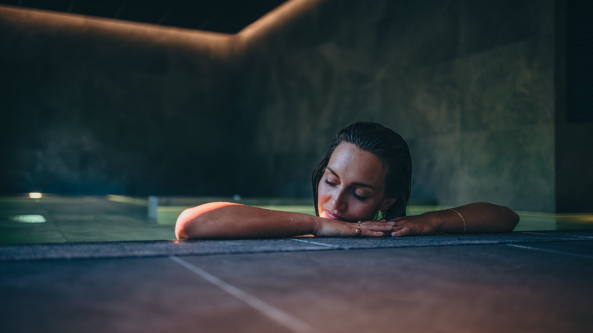
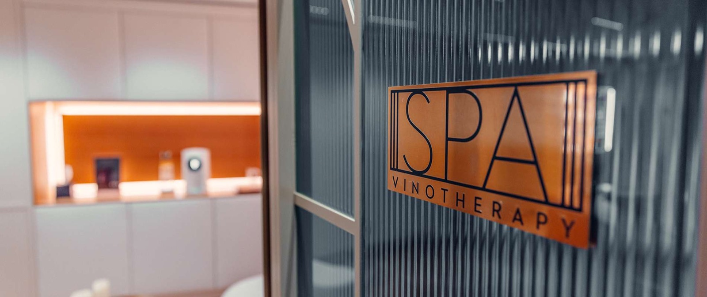

Hôtel de charme en Alsace : 14 adresses classées, du colombage à la hytte
Une cour Renaissance de 1528 à Strasbourg, une villa de maître verrier à six suites, un
ancien moulin à grains, quatorze cabanes scandinaves sur un versant vosgien. Quatorze maisons
classées sur ce qui fait réellement le charme alsacien, et non sur le nombre d'étoiles
de leur enseigne. Toutes celles que nous avons déjà notées en Alsace y figurent.
Par Lucas Lecoq, rédacteur en chef✺Publié le 12 août 2026✺18 min de lecture
La cour de l'hôtel Cour du Corbeau à Strasbourg, hostellerie de 1528. Les
poteaux sculptés, les coursives de bois et les pavés sont d'origine : c'est cela, l'Indice
Charme Alsacien à 4,6/5. Photo : Cour du Corbeau, site officiel.
TL;DR : l'essentielCinq maisons visitées, neuf documentées, une seule région
La Cheneaudière & Spa, Colroy-la-Roche, 18,6/20 au Protocole LMHS :
c'est le premier hôtel avec spa privatif de notre classement national,
et il est alsacien. Bain nordique privatif face aux Vosges, inclus dans chaque suite.
Le Chambard, Kaysersberg, 9,4/10 à la grille Destination : la meilleure
note de la Route des Vins, avec La Table d'Olivier Nasti, deux étoiles au guide
MICHELIN 2026.
Le Moulin de l'Illwald, Sélestat, 7,4/10 : 139 € la nuit
pour un moulin à grains du XVIIIe en lisière de forêt. Le meilleur ticket
d'entrée de cette page.
Trois strasbourgeoises déjà visitées complètent le tableau, reprises de notre
palmarès national : Le Bouclier d'Or 13,6/20 et son spa traditionnel
alsacien en Petite France, le Château de l'Île 13,4/20 sur son bras de
rivière, et Les Haras 13,1/20 dans l'ancien haras royal.
Le fait qui cadre toute la page : l'Alsace compte
34 restaurants étoilés au guide MICHELIN 2026, dont six tables à
deux étoiles, et quatre d'entre elles sont dans les hôtels de cette sélection.
Mais la région n'a plus de trois étoiles depuis 2019, quand l'Auberge de
l'Ill a perdu la sienne après cinquante et un ans. Le guide 2026 n'a créé aucune nouvelle
étoile alsacienne.
Notre méthode et l'Indice Charme Alsacien
Ce classement applique la grille LMHS Destination, notée sur 10, celle de
nos palmarès par destination : rapport qualité-prix, critère thématique, localisation,
service, avis vérifiés. Le critère thématique retenu ici est le charme, doublé d'un
indicateur propriétaire, l'Indice Charme Alsacien sur 5, qui repose sur cinq
marqueurs vérifiables :
Le bâti : colombage, grès rose, poutres, pavés, et surtout l'âge réel
du bâtiment. Une hostellerie de 1528 ne joue pas dans la même catégorie qu'une façade
métallique de 2019.
L'ancrage : village de la Route des Vins, vignoble, forêt vosgienne ou
centre historique. Le charme alsacien est d'abord une adresse.
La table : winstub, produits régionaux, cave alsacienne. Une carte
internationale fait perdre des points ici, même étoilée.
L'échelle : une maison de seize clés n'offre pas ce qu'offre un hôtel
de cent trente et une, quelle que soit sa décoration.
Le spa dans le registre local : bain nordique, vinothérapie, rituels
régionaux. Un spa générique ne compte pas comme du charme.
Deux échelles cohabitent dans le tableau, et elles ne se convertissent pas.
Cinq de ces maisons ont été visitées anonymement par la rédaction et gardent la note publiée
dans notre sélection nationale des hôtels avec spa privatif ou dans notre palmarès des
cinquante meilleurs hôtels et spas de France, au
Protocole LMHS sur 20, qui suppose une nuit payée. Les neuf autres n'ont pas
été visitées et relèvent de la grille Destination sur 10, établie sur
données publiques. Nous ne recalculons rien et nous ne mélangeons pas les deux dans un
classement unique. Le détail des grilles est dans notre méthode.
Le tableau : quatorze adresses, deux échelles, de 139 à 1 320 €
Les cinq maisons visitées, au Protocole LMHS sur 20
Établissement
Commune
Protocole LMHS
Indice Charme
Nuit dès
Le signe distinctif
La Cheneaudière & Spa
Colroy-la-Roche
18,6/20
4,7/5
420 €
Bain nordique privatif en suite, face aux Vosges
48° Nord
Breitenbach
16,2/20
3,9/5
350 €
14 hyttes scandinaves en site Natura 2000
Hôtel & Spa Le Bouclier d'Or
Strasbourg
13,6/20
4,7/5
240 €
Spa traditionnel alsacien, en Petite France
Château de l'Île
Ostwald
13,4/20
4,4/5
280 €
Château privatif sur une île de l'Ill
Les Haras
Strasbourg
13,1/20
4,3/5
220 €
Haras royal du XVIIIe, spa design
Les neuf autres, à la grille LMHS Destination sur 10
Rang
Établissement
Commune
Classement
Score LMHS
Indice Charme
Nuit
01
Le Chambard
Kaysersberg
5 étoiles
9,4/10
4,8/5
268 à 549 €
02
Villa René Lalique
Wingen-sur-Moder
5 étoiles
9,2/10
4,9/5
360 à 1 320 €
03
L'Esquisse Hôtel & Spa MGallery
Colmar
5 étoiles
8,9/10
4,3/5
216 à 539 €
04
Hôtel des Berges
Illhaeusern
5 étoiles
8,7/10
4,7/5
420 à 770 €
05
La Source des Sens
Morsbronn-les-Bains
4 étoiles
8,4/10
3,8/5
220 à 420 €
06
Cour du Corbeau MGallery
Strasbourg
4 étoiles
8,2/10
4,6/5
194 à 450 €
07
YONA Hôtel & Spa
Obernai
4 étoiles
8,0/10
4,1/5
252 à 420 €
08
Maison Rouge Autograph Collection
Strasbourg
5 étoiles
7,6/10
3,6/5
187 à 450 €
09
Le Moulin de l'Illwald
Sélestat
3 étoiles
7,4/10
4,2/5
139 à 280 €
Les cinq notes sur 20 sont reprises à l'identique, sans recalcul, avec
leurs tarifs publiés : La Cheneaudière et 48° Nord de notre sélection nationale des hôtels
avec spa privatif, Le Bouclier d'Or, le Château de l'Île et Les Haras de notre palmarès des
50 meilleurs hôtels et spas de France, où ils occupent les rangs 37, 39 et 42. Les neuf
autres notes relèvent de la grille Destination, sur données publiques, sans visite, et ne se
comparent pas aux notes sur 20. Fourchettes de prix relevées en août 2026.
Route des Vins : les maisons qui portent la gastronomie
Kaysersberg, où se tient Le Chambard. Photo : Le Chambard, site officiel.
01
Le Chambard, Kaysersberg 9,4/10
Pour qui : la meilleure adresse de la Route des Vins, et la seule qui
conjugue deux étoiles, un spa et une winstub dans le même bâtiment.
Demeure du XVIIIe siècle au cœur de l'un des plus beaux villages de France,
Le Chambard aligne colombages, poutres et boiseries sans jamais tomber dans le décor de
carte postale. Le spa de 200 m² dispose d'une piscine à débordement, d'un sauna et d'un
hammam. Mais ce qui fait la maison, c'est La Table d'Olivier Nasti, deux étoiles
confirmées au guide MICHELIN 2026, tenue par un Meilleur Ouvrier de France dont
la cuisine travaille le gibier, l'anguille du Rhin et le terroir avec une précision que
le guide souligne. La winstub, au rez-de-chaussée, sert la version populaire de la même
exigence, ce qui permet de dîner deux soirs sans répétition.
Le bémol LMHS : Kaysersberg est victime de son classement. Le village
sature de mai à octobre et pendant tout le marché de Noël, et la table se réserve
longtemps à l'avance. En haute saison, la nuit grimpe vers le haut de la fourchette.
5 étoiles · 268 à 549 € · Spa de 200 m² avec piscine à débordement ·
La Table d'Olivier Nasti, 2 étoiles MICHELIN 2026 · Winstub ·
Site officiel →
02
Villa René Lalique, Wingen-sur-Moder 9,2/10
Pour qui : le plus fort Indice Charme de cette page, 4,9/5, et la
maison la plus petite. Six suites, pas une de plus.
C'est l'ancienne demeure de René Lalique, le maître verrier, bâtie en
1920 dans les Vosges du Nord, à quelques centaines de mètres du musée qui porte son nom.
Six suites seulement, chacune conçue autour d'une période de la vie du
créateur, avec le cristal maison employé comme matériau et non comme vitrine. La table,
deux étoiles au guide MICHELIN 2026, est conduite depuis
2020 par Paul Stradner, qui a succédé à Jérôme Schilling et dont la
cuisine croise l'Alsace avec ses passages autrichiens et allemands. La cave est l'une des
plus considérables de France.
Le bémol LMHS : six suites, cela veut dire une disponibilité quasi
nulle et aucune souplesse d'annulation, et le haut de la fourchette, 1 320 €, est le
tarif le plus élevé de cette sélection. Wingen-sur-Moder est par ailleurs à une heure de
la Route des Vins : c'est une destination en soi, pas une base pour rayonner.
5 étoiles · 360 à 1 320 € · 6 suites · Restaurant 2 étoiles MICHELIN
2026, chef Paul Stradner · Musée Lalique à proximité ·
Site officiel →
04
Hôtel des Berges, Illhaeusern 8,7/10
Pour qui : la maison la plus chargée d'histoire gastronomique de la
région, au bord de l'Ill.
C'est l'hôtel de l'Auberge de l'Ill, la maison des Haeberlin, et son
histoire tient en une date : l'Auberge a perdu sa troisième étoile en 2019, après
cinquante et un ans. Depuis, elle en porte deux, et l'Alsace attend toujours son
prochain trois étoiles. Marc Haeberlin y sert toujours la cuisine
signature de la famille. L'hôtel compte dix-huit chambres et suites au
bord de la rivière, dans un décor de boiseries et de mobilier ancien, avec le
spa des Saules aménagé dans une grange et sa piscine extérieure chauffée.
Le bémol LMHS : Illhaeusern est un village sans vie propre, on y vient
pour la table et rien d'autre. Dix-huit clés et une fourchette qui démarre à 420 € en
font aussi l'une des adresses les plus difficiles à obtenir de cette page.
5 étoiles · 420 à 770 € · 18 chambres et suites · Auberge de l'Ill,
2 étoiles MICHELIN, chef Marc Haeberlin · Spa des Saules dans une grange ·
Site officiel →
09

Le Moulin de l'Illwald, Sélestat 7,4/10
Pour qui : le meilleur ticket d'entrée de cette page. Un charme égal
aux cinq étoiles pour un tiers du prix.
Ancien moulin à grains du XVIIIe siècle en lisière de la
forêt de l'Illwald, à cinq minutes de Sélestat et vingt de Colmar.
Seize chambres, bardeaux de bois, volets, cour pavée et cours d'eau qui
passe sous le bâtiment. La décoration joue le registre traditionnel, poutres et mobilier
ancien, avec le confort attendu. Le restaurant sert une cuisine de saison en produits
locaux, et l'établissement ajoute une piscine extérieure en saison, un sauna et un hammam.
C'est la définition littérale du charme alsacien, à 139 € la nuit en
entrée de gamme.
Le bémol LMHS : trois étoiles, donc peu de services, un spa réduit à
l'essentiel et une table sans distinction. On vient ici pour le bâtiment et pour la forêt,
pas pour être servi.
3 étoiles · 139 à 280 € · 16 chambres · Moulin du XVIIIe ·
Piscine extérieure en saison, sauna, hammam · Sélestat à 5 min ·
Site officiel →
Vosges et nature : les deux maisons que nous avons visitées
01
La Cheneaudière & Spa, Colroy-la-Roche 18,6/20
Pour qui : c'est, tout simplement, le
premier hôtel avec spa privatif de notre classement national. Et il est
alsacien, ce que la plupart des sélections régionales oublient.
Au fond de la vallée de la Bruche, à Colroy-la-Roche, la maison a la particularité
d'inclure un bain nordique privatif dans chaque suite, face à la forêt
vosgienne, accessible à toute heure et sans supplément. C'est la différence entre un spa
que l'on réserve et un spa que l'on possède le temps du séjour, et c'est ce qui lui vaut
sa place en tête de notre classement français. La note de 18,6/20 a été
établie au Protocole LMHS, après une nuit payée par la rédaction, dans le cadre de notre
sélection des hôtels avec spa privatif.
Le bémol LMHS : Colroy-la-Roche est loin de tout, à une heure de
Strasbourg comme de Colmar, et la Route des Vins n'est pas à côté. C'est un séjour en
soi, pas une base d'excursion.
Protocole LMHS 18,6/20, visite anonyme · Dès 420 € · Bain nordique
privatif permanent en suite · Vallée de la Bruche ·
Site officiel →
02
48° Nord, Breitenbach 16,2/20
Pour qui : ceux qui cherchent l'inverse exact du colombage. Un objet
architectural, pas une auberge.
Quatorze hyttes d'inspiration scandinave posées sur un versant en
site Natura 2000, bois brut, toitures végétalisées, aucune voiture sur le terrain. Chaque
hytte offre la vue sur la vallée, et une partie d'entre elles un
bain nordique ou un sauna privatif, ce qui a valu à la maison sa place
dans notre classement national. Le restaurant travaille une cuisine bistronomique en
produits bio et locaux, avec une carte de vins nature alsaciens.
Le bémol LMHS : le concept est nordique, pas alsacien, et c'est
assumé. C'est ce qui explique l'Indice Charme le plus bas de cette page, 3,9/5 : la
maison est remarquable, mais elle ne raconte pas l'Alsace. Quatorze hyttes, donc une
disponibilité très contrainte, et pas de piscine.
Protocole LMHS 16,2/20, visite anonyme · Dès 350 € · 14 hyttes ·
Site Natura 2000 · Restaurant bio et vins nature ·
Site officiel →
05

La Source des Sens, Morsbronn-les-Bains 8,4/10
Pour qui : le plus grand spa de cette sélection après celui d'Obernai,
dans une vraie station thermale.
Précision utile, parce que l'erreur circule : l'établissement est à
Morsbronn-les-Bains, dans le Bas-Rhin, à une trentaine de minutes de
Strasbourg, et non dans le vignoble haut-rhinois. C'est un
quatre étoiles de 32 chambres, aux terrasses privatives ouvertes sur la
nature, adossé à un spa de 2 000 m² qui reste la vraie raison de venir :
bassins, saunas, hammams, rituels. La table travaille le produit local et de saison.
Le bémol LMHS : c'est l'Indice Charme le plus faible des maisons
alsaciennes de cette page, 3,8/5. Le bâti est contemporain, le village est calme au point
d'être éteint, et le spa, aussi complet soit-il, relève du registre wellness
international plutôt que du registre régional.
4 étoiles · 220 à 420 € · 32 chambres · Spa de 2 000 m² ·
Morsbronn-les-Bains, à 30 min de Strasbourg ·
Site officiel →
Strasbourg, Colmar, Obernai : le charme en ville
Strasbourg concentre à elle seule quatre adresses de cette page, dont trois que nous avons visitées. C'est la densité la plus forte de la région, et elle s'explique : le bâti y est ancien, dense et protégé, ce que l'Indice Charme Alsacien récompense mécaniquement.
06
Cour du Corbeau MGallery, Strasbourg 8,2/10
Pour qui : le meilleur Indice Charme urbain de la page, 4,6/5, et de
loin le plus vieux bâtiment.
Hostellerie de 1528, à deux pas de la cathédrale, la Cour du Corbeau
est l'une des plus anciennes maisons d'hôtes d'Europe encore en activité. Façade à
colombages sculptés, encorbellements, cour pavée cernée de coursives de bois : le décor
n'est pas une reconstitution, il est classé. Les 63 chambres, exploitées
sous enseigne MGallery, mêlent poutres apparentes et confort contemporain, et les
catégories supérieures regardent les toits de la Petite France.
Le bémol LMHS : pas de spa, ce qui, à 450 € en haut de fourchette,
se remarque. Les chambres standard sont petites, contrainte normale dans un bâtiment du
XVIe, et le bruit de la ville monte dans la cour aux beaux jours.
4 étoiles · 194 à 450 € · 63 chambres · Bâtiment de 1528 ·
Cathédrale et Petite France à pied · Aucun spa ·
Site officiel →
03
L'Esquisse Hôtel & Spa MGallery, Colmar 8,9/10
Pour qui : la meilleure combinaison spa et table étoilée de cette
page, à condition d'accepter une architecture résolument contemporaine.
Ouvert sur le Champ-de-Mars colmarien, L'Esquisse est un cinq étoiles de
62 chambres et suites à la façade métallique verte et dorée, avec un
spa Clarins de 500 m², piscine intérieure chauffée, sauna, hammam et
jacuzzi. La table est JY'S, deux étoiles au guide MICHELIN 2026, signée
Jean-Yves Schillinger : c'est l'une des six tables biétoilées d'Alsace,
et la seule de Colmar. La Petite Venise, le musée Unterlinden et la collégiale sont à
pied.
Le bémol LMHS : l'Indice Charme tombe à 4,3/5, et c'est mérité. Le
bâtiment est neuf, le vocabulaire décoratif est international, et rien dans l'architecture
ne dit l'Alsace. On vient ici pour le spa, la table et l'emplacement, pas pour le
colombage.
5 étoiles · 216 à 539 € · 62 chambres et suites · Spa Clarins de 500 m² ·
JY'S, 2 étoiles MICHELIN 2026 ·
Site officiel →
07

YONA Hôtel & Spa, Obernai 8,0/10
Pour qui : le plus grand spa de la région, et une position centrale
entre Strasbourg, la Route des Vins et le Mont Sainte-Odile.
La maison exploite le Yonaguni Spa, que notre palmarès national classe
déjà 13,9/20 au Protocole LMHS pour son labyrinthe aquatique et ses
parcours thématiques : c'est le seul spa alsacien de notre classement des cinquante
meilleurs de France. L'hôtel compte 48 chambres et suites tournées vers
le Mont Sainte-Odile ou les jardins, avec une architecture à colombages et toits pentus
conforme au registre local. Strasbourg est à vingt-cinq minutes.
Le bémol LMHS : le spa est spectaculaire mais résolument moderne, et
la table de l'hôtel ne porte pas de distinction, alors qu'Obernai abrite
La Fourchette des Ducs, l'une des six tables à deux étoiles d'Alsace,
maison indépendante. L'affluence du week-end se ressent dans les bassins.
4 étoiles · 252 à 420 € · 48 chambres et suites · Yonaguni Spa,
13,9/20 à notre palmarès national · Obernai, à 25 min de Strasbourg ·
Site officiel →
08

Maison Rouge Autograph Collection, Strasbourg 7,6/10
Pour qui : l'adresse strasbourgeoise la plus équipée, à condition
d'assumer une maison de cent trente et une clés.
Cinq étoiles, exploité sous enseigne Autograph Collection, l'hôtel
occupe une adresse strasbourgeoise dont l'histoire d'auberge remonte au Moyen Âge, avec sa
façade rouge emblématique et un intérieur d'inspiration Art déco.
131 chambres et suites, un spa Vinésime de 150 m² avec hammam, sauna,
jacuzzi et soins de vinothérapie, deux restaurants et un bar à cocktails. La position est
imbattable, entre la place Kléber, la cathédrale et la Petite France.
Le bémol LMHS : l'Indice Charme tombe à 3,6/5, le plus bas de la page,
et c'est arithmétique. Cent trente et une chambres diluent l'intimité, le spa de 150 m²
est petit au regard du classement cinq étoiles, et la table ne porte pas de distinction.
On paie ici une localisation et une enseigne, pas une maison de charme.
5 étoiles · 187 à 450 € · 131 chambres et suites · Spa Vinésime de
150 m² · Autograph Collection · Place Kléber ·
Site officiel →
12
Hôtel & Spa Le Bouclier d'Or, Strasbourg 13,6/20
Pour qui : la seule maison de cette page dont le spa est lui-même
alsacien de registre. Indice Charme 4,7/5, le meilleur du trio strasbourgeois.
En pleine Petite France, dans une maison du XVIe siècle,
Le Bouclier d'Or est classé 37e de notre palmarès des cinquante
meilleurs hôtels et spas de France, à 13,6/20 après visite. Son argument tient
en une ligne que peu d'établissements peuvent écrire : le spa n'y est pas un module
importé, c'est un spa traditionnel alsacien, cohérent avec les pierres
qui l'abritent. À 240 € la nuit, c'est aussi l'un des meilleurs rapports de cette
sélection en centre-ville.
Le bémol LMHS : 13,6/20 au Protocole reste une note moyenne à
l'échelle nationale, et la maison est petite, en plein secteur le plus fréquenté de
Strasbourg. L'été et pendant le marché de Noël, la Petite France est un couloir.
Protocole LMHS 13,6/20, visite anonyme · Dès 240 € · Maison du
XVIe · Spa traditionnel alsacien · Petite France ·
Site officiel →
13
Château de l'Île, Ostwald 13,4/20
Pour qui : Strasbourg sans Strasbourg. Un parc, une rivière, et le
centre à un quart d'heure.
À Ostwald, aux portes de la ville, le château occupe une
île sur un bras de l'Ill, dans un parc que la rivière ferme de tous
côtés. C'est ce qui lui vaut son point fort dans notre palmarès national, où il est
classé 39e avec 13,4/20 : un
château réellement privatif, avec son spa, à une distance du centre qui
se fait en tram. Colombages, toitures pentues et vastes pelouses composent un décor
alsacien de manuel, à 280 € la nuit.
Le bémol LMHS : la maison vit beaucoup du séminaire et de
l'événementiel, ce qui se sent en semaine. Et à Ostwald, on dépend de la voiture ou du
tram pour tout ce qui n'est pas sur place.
Protocole LMHS 13,4/20, visite anonyme · Dès 280 € · Château sur une île
de l'Ill · Spa · Ostwald, aux portes de Strasbourg ·
Site officiel →
14
Les Haras, Strasbourg 13,1/20
Pour qui : le bâtiment le plus inattendu de cette page, et le tarif
d'entrée le plus bas des adresses visitées.
C'est l'ancien haras royal de Strasbourg, fondé au XVIIIe
siècle, reconverti en hôtel sans que la fonction d'origine soit effacée : les
volumes d'écurie, la charpente et la cour restent lisibles, et le spa y a été installé
dans un vocabulaire résolument contemporain. Classé 42e de notre
palmarès national avec 13,1/20, à 220 € la nuit, c'est
l'adresse visitée la plus abordable de cette sélection.
Le bémol LMHS : l'Indice Charme s'arrête à 4,3/5 parce que le
traitement intérieur, très design, prend le pas sur le bâti. Le spa est petit au regard
de l'ampleur du lieu, et l'établissement accueille beaucoup de clientèle d'affaires.
Protocole LMHS 13,1/20, visite anonyme · Dès 220 € · Ancien haras royal
du XVIIIe · Spa design · Strasbourg ·
Site officiel →
Le mot de LucasLa meilleure adresse alsacienne n'est pas sur la Route des Vins
Toutes les
sélections alsaciennes se ressemblent parce qu'elles suivent la même route, celle des vins,
de Marlenheim à Thann. Or la seule maison de cette page que nous ayons réellement testée,
nuit payée et visite anonyme, se trouve au fond de la vallée de la Bruche, à Colroy-la-Roche,
et elle est première de notre classement national des hôtels avec spa
privatif. Elle ne figure dans presque aucun palmarès régional.
C'est le biais de cet exercice : on classe ce qui est visible depuis la route
touristique. L'autre enseignement tient dans l'écart entre deux colonnes. Maison
Rouge est un cinq étoiles et obtient 3,6/5 au charme ; le Moulin de l'Illwald est un trois
étoiles à 139 € et obtient 4,2/5. Le classement hôtelier mesure des équipements, pas une
âme, et en Alsace plus qu'ailleurs, les deux ne se recouvrent pas.
Lucas Lecoq, rédacteur en chef
Comment choisir selon ce que vous cherchez
Pour la table. Quatre des six tables alsaciennes à deux étoiles sont dans
les hôtels de cette page : Le Chambard, la Villa René Lalique, l'Auberge de l'Ill à l'Hôtel
des Berges, et JY'S à L'Esquisse. Les deux autres, La Merise à Laubach et La Fourchette des
Ducs à Obernai, sont des maisons indépendantes. Rappel utile :
l'Alsace n'a plus de trois étoiles depuis 2019.
Pour le spa. Le Yonaguni Spa de YONA à Obernai est le seul spa alsacien de
notre palmarès des cinquante meilleurs de France, à 13,9/20. Pour un spa dans la chambre en
revanche, il n'y a qu'une réponse, La Cheneaudière et son bain nordique privatif en suite,
détaillée dans notre sélection des hôtels avec spa
privatif.
Pour le budget. De 139 € au Moulin de l'Illwald à 1 320 € en haut de
fourchette à la Villa René Lalique, l'écart est d'un facteur neuf et demi. Entre les deux,
Cour du Corbeau à partir de 194 € et Maison Rouge à partir de 187 € donnent accès à
Strasbourg à un tarif d'entrée modéré, à condition de réserver en basse saison. Si c'est le
format du séjour qui vous intéresse, notre page
week-end spa en France chiffre ce que deux nuits
coûtent réellement.
Pour le charme, au sens strict. Quatre adresses passent 4,6/5 :
la Villa René Lalique, Le Chambard, la Cour du Corbeau et Le Bouclier d'Or. Elles n'ont ni le même prix ni le
même format, mais elles partagent la seule chose que l'indice mesure vraiment, un bâtiment
qui existait avant l'hôtel.
Quand partir en Alsace
De fin janvier à mars, et en juin : ce sont les deux
fenêtres où les tarifs d'appel de ce tableau correspondent à la réalité. Les villages de la
Route des Vins sont praticables, les tables se réservent à quinze jours plutôt qu'à trois
mois, et les spas sont vides en semaine.
Septembre et octobre sont les plus beaux mois, vendanges comprises, mais
aussi les plus demandés après Noël. De fin novembre au 24 décembre, les
marchés de Noël de Strasbourg, Colmar et Kaysersberg saturent toute la région : les prix
doublent et la circulation devient pénible. C'est un choix, pas une découverte.
FAQ : hôtel de charme en Alsace
Quel est le meilleur hôtel de charme en Alsace ?
Cela dépend de l'échelle. La seule maison de notre sélection que la rédaction a
réellement visitée, La Cheneaudière & Spa à Colroy-la-Roche, obtient
18,6/20 au Protocole LMHS et occupe la première place de notre classement
national des hôtels avec spa privatif. Sur la grille Destination, appliquée sans visite,
c'est Le Chambard à Kaysersberg qui arrive en tête avec
9,4/10 et un Indice Charme Alsacien de 4,8/5. Les deux notes ne se
convertissent pas l'une dans l'autre.
Quel budget prévoir pour un hôtel de charme en Alsace ?
De 139 € la nuit au Moulin de l'Illwald, trois étoiles à Sélestat, à
1 320 € en haut de fourchette à la Villa René Lalique. Le cœur du marché
se situe entre 200 et 450 € : Cour du Corbeau à partir de 194 €, Maison
Rouge à partir de 187 €, La Source des Sens à partir de 220 €, YONA à partir de 252 €.
Les cinq étoiles gastronomiques, Le Chambard et l'Hôtel des Berges, démarrent
respectivement à 268 et 420 €.
Combien de restaurants étoilés compte l'Alsace en 2026 ?
34 restaurants étoilés au guide MICHELIN 2026, dont
six tables à deux étoiles : La Table d'Olivier Nasti à Kaysersberg, la
Villa René Lalique à Wingen-sur-Moder, JY'S à Colmar, l'Auberge de l'Ill à Illhaeusern,
La Merise à Laubach et La Fourchette des Ducs à Obernai. Le guide 2026
n'a créé aucune nouvelle étoile en Alsace, et la région
n'a plus de table à trois étoiles depuis 2019, quand l'Auberge de l'Ill
a perdu la sienne après cinquante et un ans.
Quel hôtel de charme en Alsace pour un week-end en couple ?
Pour l'intimité, la Villa René Lalique et ses six suites, ou
La Cheneaudière, dont chaque suite possède son bain nordique privatif
face à la forêt. Pour le décor, la Cour du Corbeau à Strasbourg, dans un
bâtiment de 1528, avec un Indice Charme Alsacien de 4,6/5. Pour l'équilibre entre le prix
et le cadre, Le Moulin de l'Illwald à partir de 139 €.
Quel hôtel avec le meilleur spa en Alsace ?
YONA à Obernai, dont le Yonaguni Spa est le seul spa alsacien classé
dans notre palmarès des cinquante meilleurs hôtels et spas de France, à
13,9/20. Si vous cherchez un spa privatif plutôt qu'un grand spa
collectif, la réponse est La Cheneaudière, dont le bain nordique est
inclus dans chaque suite et accessible à toute heure. L'Esquisse à Colmar propose de son
côté un spa Clarins de 500 m² avec piscine intérieure chauffée.
Où se trouve exactement La Source des Sens ?
À Morsbronn-les-Bains, dans le Bas-Rhin, à une trentaine de minutes de
Strasbourg, et non dans le vignoble haut-rhinois comme on le lit parfois. C'est un quatre
étoiles de 32 chambres adossé à un spa de 2 000 m², dans une petite station thermale, à
l'écart de la Route des Vins.
Pourquoi certains hôtels sont-ils notés sur 20 et d'autres sur 10 ?
Parce que les deux notes ne mesurent pas la même chose. Le
Protocole LMHS sur 20 suppose une nuit payée par la rédaction et une
visite anonyme : deux maisons de cette page en bénéficient, La Cheneaudière et 48° Nord.
La grille LMHS Destination sur 10 s'applique sur données publiques, sans
visite, et concerne les neuf autres. Les deux échelles
ne se convertissent pas, et le tableau les sépare pour cette raison.
Quand faut-il éviter de venir en Alsace ?
De fin novembre au 24 décembre, si vous cherchez le calme : les
marchés de Noël de Strasbourg, Colmar et Kaysersberg saturent la région, les prix doublent
et la circulation devient difficile. Les meilleures fenêtres sont
février et mars, puis juin, quand les tarifs d'appel
correspondent à la réalité et que les tables se réservent à quinze jours.
Méthode et sources
Quatorze maisons alsaciennes, classées selon deux instruments distincts qui ne se
convertissent pas. Cinq d'entre elles ont été visitées anonymement, nuit et
prestations payées par la rédaction, et conservent leur note au Protocole LMHS sur 20 :
La Cheneaudière 18,6/20 et 48° Nord 16,2/20, reprises de notre sélection nationale des
hôtels avec spa privatif, ainsi que Le Bouclier d'Or 13,6/20, le Château de l'Île 13,4/20
et Les Haras 13,1/20, repris de notre palmarès des cinquante meilleurs hôtels et spas de
France. Toutes les adresses alsaciennes déjà notées par Meilleurs. figurent désormais dans
ce classement régional. Les neuf autres n'ont pas été visitées et relèvent de
la grille LMHS Destination sur 10, établie sur données publiques, doublée de l'Indice Charme
Alsacien sur 5 et de ses cinq marqueurs. Aucune note antérieure n'a été recalculée. Les
distinctions du guide MICHELIN, le nombre de tables étoilées d'Alsace et la perte de la
troisième étoile de l'Auberge de l'Ill en 2019 ont été vérifiés sur l'édition 2026 du guide
et la presse régionale. Caractéristiques, capacités, surfaces de spa et localisations
relevées en août 2026 sur les sites officiels des établissements.
Les fourchettes de prix sont des tarifs d'appel indicatifs, relevés à la
même date, hors haute saison et hors marchés de Noël. Aucun partenariat commercial, aucune
affiliation, aucun séjour offert.